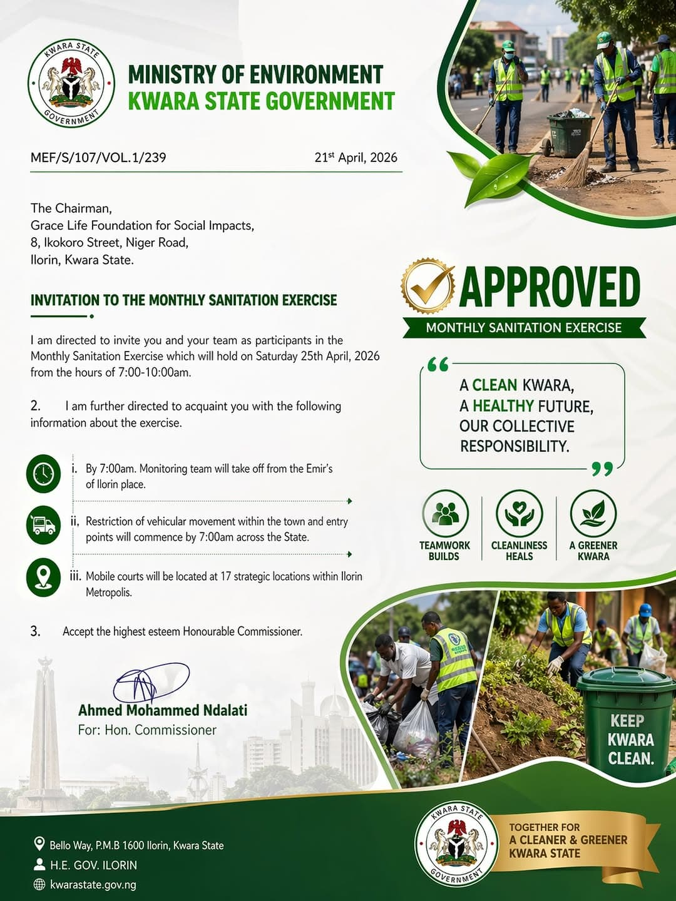
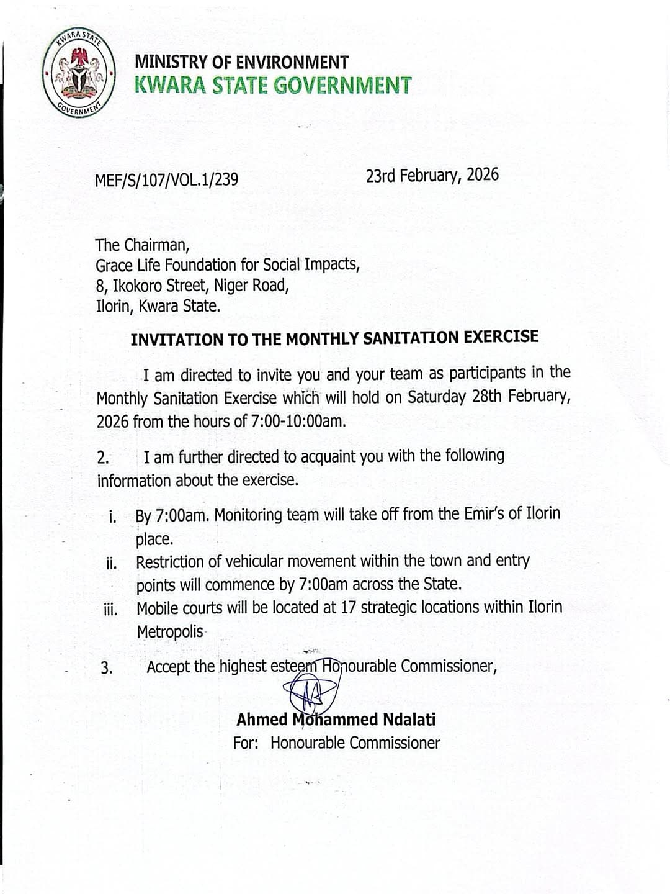
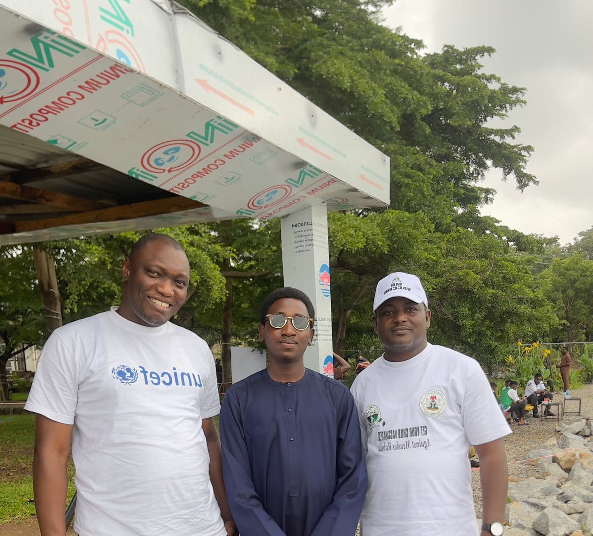

Grace Life Foundation For Social Impacts is a registered non-profit committed to improving environmental health
and community safety in vulnerable communities.
We focus on practical solutions to everyday environmental challanges that affect health, safety, and quality of life.
Our work Addresses sanitation issues, promotes responsible environmental
practices, and targets high-risks areas such as schools, markets, and densely populated
public spaces.
We believe that a clean environment is not only about appearance, but about protection. Poor sanitation
and unsafe practices can lead to serious health risks, fire harzads, and damage to shared community systems. That is
why our approach goes beyond awareness, and long-term behavoiral change.
Our Impact in Numbers
Measuring progress across every community we serve
12programs
Program OutreachActive environmental & health initiatives improving lives across communities.
40+people
VolunteersDedicated volunteers driving committed to driving sustainable change at the grassroots level.
3partners
Partnerships
Working closely with Kwara State ministries, agnecies, & community youths to drive impact.
6schools
School OutreachDelivering vocational skills & menstrual health education across schools & communities.
10+events
Sanitation EventsSustaining monthly community clean-up & sanitation exercises since inception.
We Are Calling For Support
Grace Life Foundation for Social Impacts team visited Queen Elizabeth Girls School to discuss how keeping our surroundings clean goes beyond
managing waste. it protects health, reduces disease, and creates a safe space where students can learn and thrive.
A cleaner environment is a lasting gift to the next generation. DONATE HERE.
OUR LATEST INITIATIVE
Our Environmental Health Education program is designed to empower Green Ambassadors
to take responsibility for their surroundings.
By focusing on waste management and the 3Rs, we are directly contributing to:
Investing in clean schools means investing in national progress.
Our Engagements

We are honored to receive this approval and invitation from the Kwara State Ministry of Environment
for the Monthly Sanitation Exercise. This reflects growing trust in our mission to build cleaner
communities, healthier environments, and stronger civic action. We remain committed to partnerships
that create visible change.

We are honored to be invited by the Kwara State
Ministry of Environment to participate in the Monthly Sanitation Exercise.
This invitation shows our growing role in driving environmental health
and community action. Support us to scale this impact.
Grace Life Foundation met with a community youth today. We discussed the waste
issues, the health risks, and how the community can support with the clean up.
I kept it respectful and clear. Our goal is partnership not blame.

Grateful for the visit from UNICEF. It's inspiring to see our efforts
recognized and supported by those leading global change!.
Grace Life Foundation visited Ogele today and had a warm interaction with the AARE.
We shared our plans for the school outreach and listened to his advice on how best
to support the children and families. His encouragement as we work hand in hand with
the community.
Grace Life Foundation had a fruitful meeting with the Honourable Commisioner of Education
to discuss our outreach programs. Our focus is to equip students with vocational skills,
provide menstrual health support and distribute essential learning materials to
underserved schools.